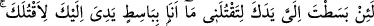
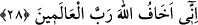

değersiz şeyi takdim etme yoluna meyletmişti.
Daha sonra iki kardeş kurbanlarını takdim ettikleri dağdan aşağı indiler. Kâbil
kurbanının reddine çok kızmış ve Âdem (a.s.) Beytullah’ı ziyâret için Mekke’ye
gidinceye kadar içindeki kini gizlemişti. Âdem (a.s.) ayrılınca Kâbil, hayvanlarının
arasında olan Hâbil’e geldi. Kardeşine “Andolsun seni öldüreceğim.” dedi.” Hâbil:
“Niçin?” dedi. O, şöyle cevap verdi: “Çünkü Allah senin kurbanını kabul etti,
benimkini reddetti. Sen benim güzel kardeşimle evleniyorsun ben ise senin çirkin
kardeşinle: İnsanlar senin benden daha hayırlı olduğunu söyleyecek ve senin çocuğun da
benim çocuğuma karşı gururlanacak.”
“Diğeri ise: Bunun üzerine kurbanı kabul edilen Hâbil: Benim günahım ne? “Allah
ancak takvâ sâhiplerinden kabûl eder” başkalarından değil “dedi.” “Ancak benim
kurbanımın kabul edilip seninkinin reddedilmesi, bizde takvânın bulunup
bulunmamasıyla ilgili bir durumdur. Yani sen kurbanı benim tarafımdan değil, kendinden
takdim ettin. O halde neden beni öldürüyorsun?” dedi.
Takvâ, Rasûlullah (s.a.v.)’in “Takvâ işte buradadır.”[297] diyerek kalbini gösterdiği
üzere kalbin sıfatlarındandır. Takvânın hakîkati; amel eden insanın yaptığı tâatlerde
nefsinin kusur işlemesinden korkması, bu taatleri Allah’ın rızâsını talep dışında bir
maksatla yapmaktan ve bu tâatlerde Allah’tan başkasını ortak kılmaktan çok
sakınmasıdır.
28- «Andolsun ki sen, öldürmek için bana elini uzatsan (bile) ben sana, öldürmek
için el uzatacak değilim. Ben, âlemlerin Rabbi olan Allah’tan korkarım.»
“Andolsun ki sen, öldürmek için bana elini uzatsan” bile “ben sana, öldürmek için
el uzatacak değilim.” Yani, vallahi eğer sen beni tehdit ettiğin gibi bana elini uzatıp
beni öldürmeye teşebbüs eder de buna kalkışırsan, ben hiçbir zaman buna karşılık
vermeyeceğim, dedi ve sebep olarak şunu gösterdi: “Ben âlemlerin Rabbi olan
Allah’tan korkarım.”
Denildiğine göre Hâbil, Kâbil’den daha kuvvetliydi ama öldürmekten sakınıp
Allah’tan korktuğu için ona teslim oldu. Çünkü nefsini müdâfaa için öldürmek, o zaman
mübah değildi.
Beğavî şöyle demiştir: Hz. Osman (r.a.)’ın yaptığı gibi öldürülmek istenen kişinin,
ecrini umarak buna boyun eğip teslim olması şerîatta câizdir.